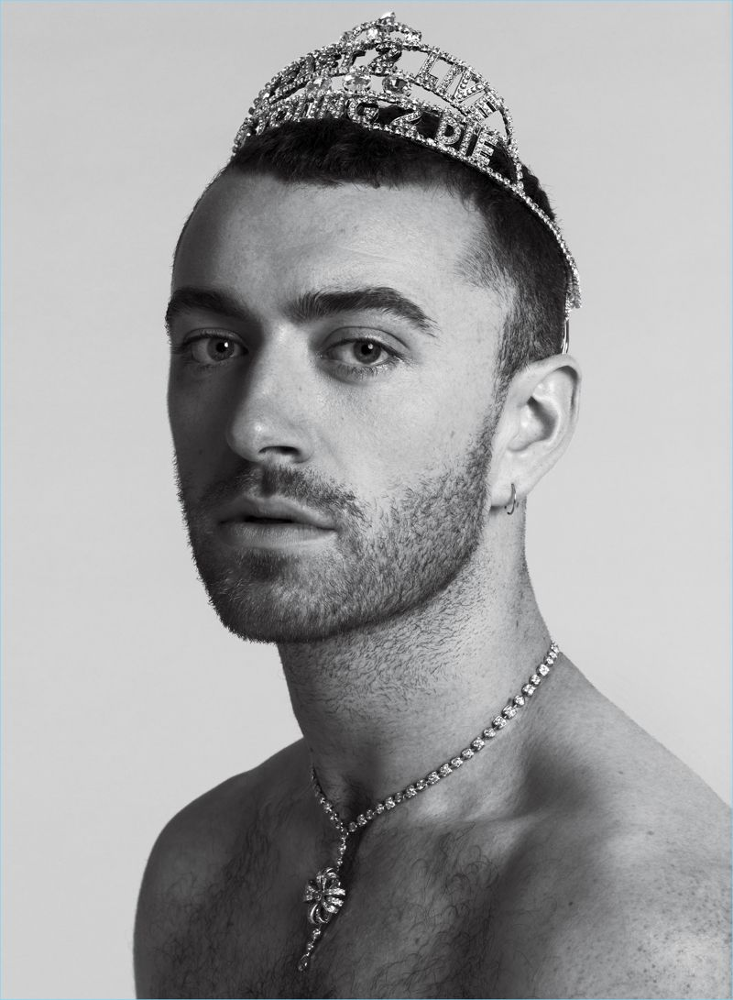

Datos Curiosos
- No es la primera persona famosa que se declara de género no binario (que no se identifica enteramente como hombre ni mujer), pero sí la primera que ha vendido más de veinte millones de discos.
- En mayo de 2014, reveló su homosexualidad reconociendo una relación finalizada con el actor y modelo Jonathan Zeizel.
- En octubre de 2017, confirmó sus relaciones con el actor Brandon Flynn. Se separaron en junio de 2018.
- Señaló que usará su música para convertirse en un referente de la Comunidad Gay y aprovechar su estatus para luchar por los derechos de los homosexuales. En otra entrevista con 4Music, habló de su lucha contra su trastorno obsesivo-compulsivo.
- El cantante reveló también en una entrevista que no se considera hombre o mujer y que ha pensado en la cirugía de reasignación de sexo.